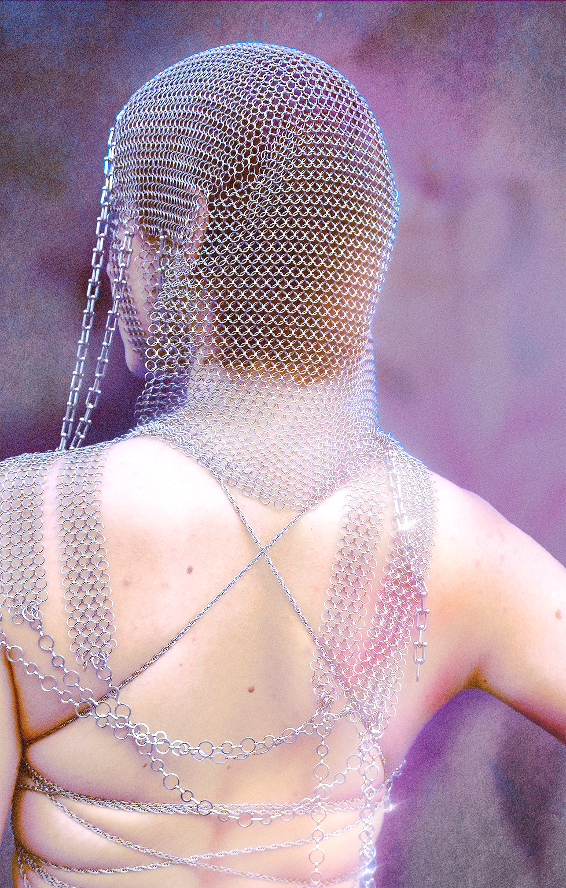
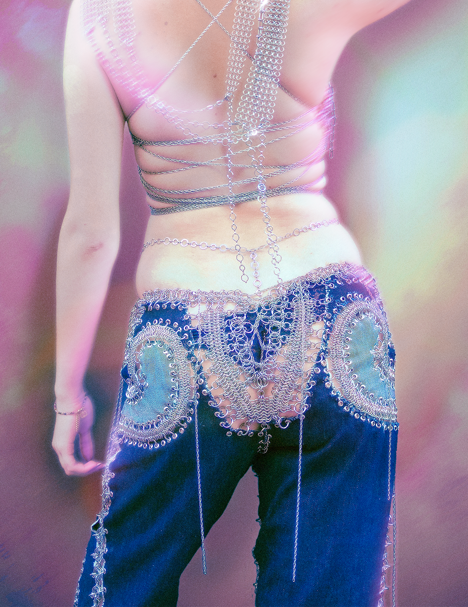
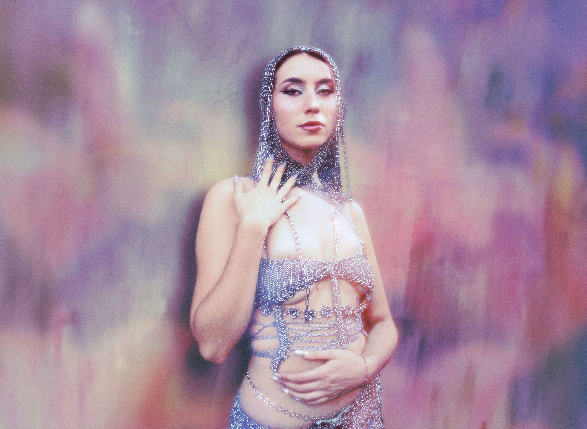
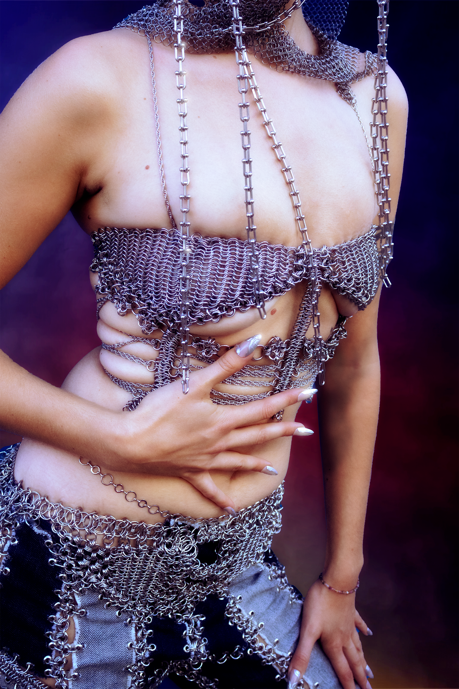

Yena Jewerly
- Client
- Yena Jewerly
- Rôle
- Direction Artistique, photographie, retouches
- Demande
- Photographies pour les vêtements-bijoux Yena.
La direction artistique du photoshoot vient appuyer
la revisite sensuelle et féminine de l'armure par l'artiste.
Cette pièce, majoritairement associé aux hommes, est ici réapproprié : le vêtement est abordé sous le prisme du female gaze, le regard féminin.



